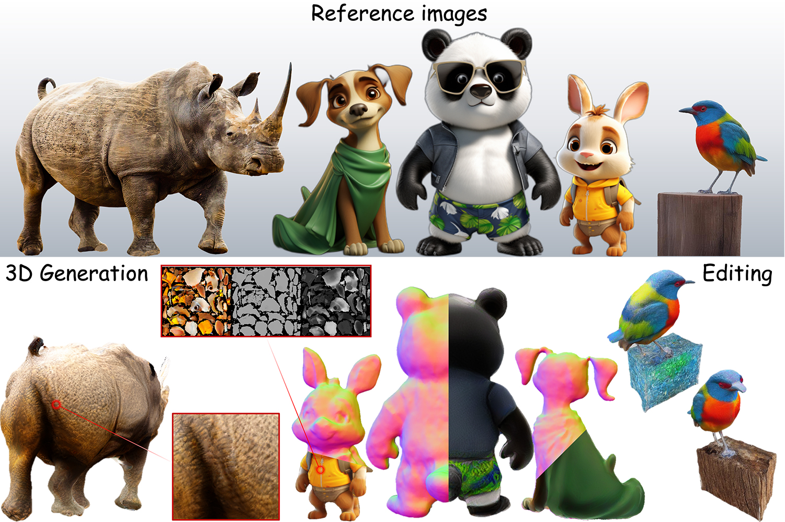
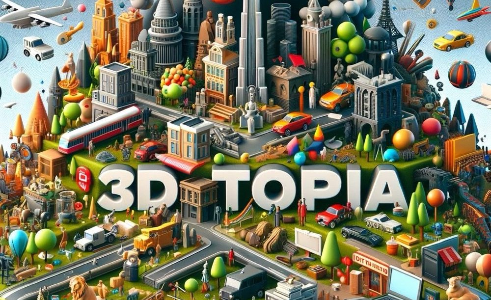

Shuai Yang
About Me
I am a second-year Ph.D. student at Shanghai Jiao Tong University & Shanghai AI Laboratory ,co-supervised by Prof. Dahua Lin and Prof. Ziwei Liu. I also works closely with Dr. Tong Wu in Stanford University. Now I am a research intern at the Shanghai Artificial Intelligence Laboratory. My research interests lie in GenAI, and I am currently dedicate to creating open VR interactive world model
Research Interests
- World model simulation
- 3D Vision
- Video generation
News
- [2025-09] Two papers accepted to NeurIPS 2025.
- [2025-06] We release the spmem, a novel method that enhances long-term consistency in video world model via geometry-grounded spatial memory inspired by the human mind..
- [2025-04] LayerPano3D accepted to SIGGRAPH 2025.
- [2024-12] We release the Imagine360, a novel method that converts standard video into dynamic 360° video with structured motion. .
- [2024-08] We release the LayerPano3D, a novel method that generates full-view, explorable panoramic 3D scenes from a single text prompt. .
- [2023-09] Start my journey in Shanghai Jiao Tong University.
- [2023-08] HyperDreamer accepted to SIGGRAPH Asia 2023.
- [2023-06] Graduated from Tongji University.
Publications
-
 NeurIPS
Tong Wu*, Shuai Yang*, Ryan Po, Yinghao Xu, Ziwei Liu, Dahua Lin, Gordon Wetzstein
NeurIPS
Tong Wu*, Shuai Yang*, Ryan Po, Yinghao Xu, Ziwei Liu, Dahua Lin, Gordon Wetzstein
NeurIPS 2025 (* equal contribution) -
 SIGGRAPH
Shuai Yang*, Jing Tan*, Mengchen Zhang, Tong Wu, Yixuan Li, Gordon Wetzstein, Ziwei Liu, Dahua Lin
SIGGRAPH
Shuai Yang*, Jing Tan*, Mengchen Zhang, Tong Wu, Yixuan Li, Gordon Wetzstein, Ziwei Liu, Dahua Lin
SIGGRAPH, 2025. (* equal contribution) -
 SIGGRAPH AsiaTong Wu*, Zhibing Li*, Shuai Yang*, Pan Zhang, Xingang Pan, Jiaqi Wang, Ziwei Liu, Dahua Lin
SIGGRAPH Asia, 2023. (* equal contribution) -
 Technical ReportFangzhou Hong, Jiaxiang Tang, Ziang Cao, Min Shi, Tong Wu, Zhaoxi Chen, Shuai Yang , Tengfei Wang, Liang Pan, Dahua Lin, Ziwei LiuTechnical Report


Misc
I'm a die-hard NBA fan, and Chicago's own—Derrick Rose—is my all-time favorite. ❤️ The youngest MVP in history! I'm also a big LeBron James fan—you know, the man is a legend!

Powered by Jekyll and Minimal Light theme.